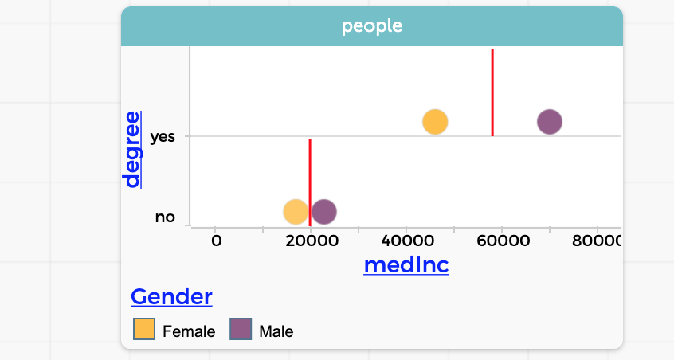
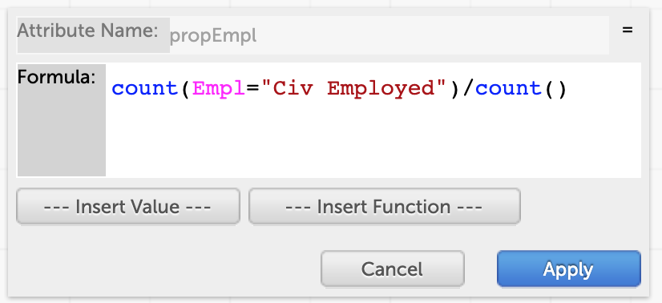
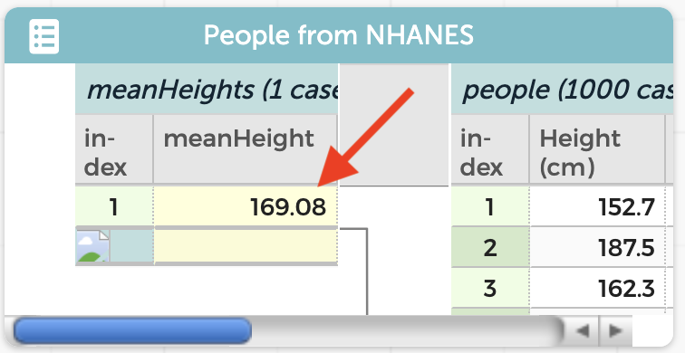

11 Summarizing
We calculate summary values in order to help describe and compare groups. For example, if we want to show that seventeen-year-olds are taller than eleven-year-olds, we could compute and compare mean heights.
The summary might represent a “typical” value, a measure of center, such as a mean. It could be a measure of spread such as an interquartile range. It could be something complex like a Gini index or as pedestrian as the number of members of the group. It might even be a categorical label (e.g., rich or poor) that you calculated expressly to define a set of groups.
It’s easier to compare two numbers than thousands. Those means stand in for all the zillions of heights that might have gone into the calculation. If we just look at the means, we are tacitly agreeing to disregard the zillions (minus two) of individual values, in the service of making the comparison easier. And although this bargain can sometimes blow up in our faces, summary values such as the mean are extremely useful and powerful.
The challenge for us data analysts, then, is three-fold:
- What measure, what summary value, is the right one for what we’re trying to figure out?
- What groups should we apply that measure to? and
- How do we construct those groups?
In terms of data moves in this book, you deal with the second and third bullets by performing a grouping move, possibly filtering as well.
This chapter is about the first bullet. We will focus mostly on how to apply the measure we have chosen to the groups, and to a lesser extent on the extremely important issue of what measure to apply.
11.1 Using the “ruler” palette in a graph
The easiest way to calculate a summary is to click in the ruler palette attached to a graph. Depending on what kind of attribute (numerical, categorical) is on an axis, different measures are available.
If the attribute is numerical (like Height) you can display things like the mean or median, and additional goodies such as box plots, which implicitly show the median and the quartiles. To see the numerical value of one of these measures, hover over the line that appears in the graph. If the attribute is categorical (like Marital_status), you can display counts and percentages. And if there are two numerical axes you can display least-squares regression lines, which give you slope, intercept, and r-squared.
11.2 Writing formulas
In the chapter on grouping, you saw how to use dragging to the left to define groups, as in the following figure. We made the degree attribute–the one we used for grouping— using the technique described here. Thus, we have two groups: those with college degrees and those without.

Let’s investigate the income difference between these two groups. We need a number, a summary value, to characterize the income of each group. We’ll pick the median of the income.
We have done this already in the second demo lesson about height, age, and gender, Children and Teens, Part 2. There, we had made our groups (by dragging Age and Gender to the left) and made a new column, with a formula, mean(Height).
Let’s apply that same pattern to this situation.
In the chapter on calculating, you learned about writing formulas to re-express existing data in a new column. This chapter is about formulas for “stuff like averages.” These formulas will be different in some important ways. The key difference is that a function like mean()— which you use to compute the average value—applies to an entire group of cases, whereas a function like abs()—for absolute value—applies to one case at a time.
To calculate the median income of each group, start by making a new column on the left side of the table. Let’s call it medInc. Then give it a formula: median(Income).
that will appear in a new tab.


When you click Apply, CODAP fills in the medInc column with the values.

medInc column.That formula will keep computing the median income even if you change the grouping. The next illustration shows what you see if you drag Gender to the left as well, which makes four groups, one for each combination of males and females, with and without degrees.
You can, of course, make graphs using those new columns. They might have very few points, but they help tell a story.

Gender as well as degree
By the way, this shows a common statistical blunder: the red lines are medians, but not the medians of the incomes for the ‘yes’-degree group and the ‘no’-degree group. They show the medians of the dots we see, that is, the points halfway between the males and females.
11.3 Summarizing Categorical Attributes
We often think of summaries as means or medians—or more elaborate statistical quantities such as percentiles or standard deviations.
Alas, those functions don’t make sense for categorical attributes. (What’s the mean gender of a group?) What should we do? Let’s think about a situation where we want to compare groups; then we’ll think about how to use a categorical attribute to compare them.
In fact, let’s use theWe divided up our sample of people into two groups: those with college degrees and those without. Back then, we compared their median incomes; and income is numeric. But what about employment? That’s categorical—let’s use it.
What does your stereotype say? Mine says that people with college degrees are more likely to have a job. That would mean that a greater proportion (or percentage if you multiply by 100) of the “degree” group would be listed as “civilian employed.”
We can do this just like before, but we’ll need a (slightly) more elaborate formula. The basic idea is:
- Count how many people have a value of
Emplequal to"Civ Employed". - Count how many people there are altogether.
- Divide the first number by the second.
Here is what the formula looks like, and how it turned out.1 Our college grads are more likely to have a job:


The formula for the proportion employed, propEmpl, and the result.
11.4 More Functions
Okay, we’ve talked about mean() and median(), sum() and count(). What else have we got that we can use to summarize data?
When you open up the formula editor, there is a button labeled –Insert Function–. Click it to produce a menu. It has seven categories of functions to choose from; each category has several options. The left illustration shows the statistical submenu. You can see a whole slew of functions.
Each function has an information button to the right of the name. The right-hand illustration shows what the info looks like for the (rather complicated) percentile() function.


percentile().If you read this carefully, you can conclude that to get the 10th percentile in weight, you would use percentile(Weight, 0.1).
11.5 Implied Filters: Booleans inside your functions
You are used to using functions like this:
mean(Weight)But CODAP functions are more flexible than that. You could write, for example,
mean(Weight / Height^2, Empl = "Civ Employed")and you will get the average BMI for all of the people with jobs2.
That is, you can take the mean of an expression—not just a plain attribute— and CODAP will calculate that value for every case before taking the mean.
The second argument, after the comma, is a filter. Only those cases for which the expression is true will be in the calculation.
That is, you can perform many calculations and apply filters entirely in formulas, without ever hiding or setting aside or making new columns.
This is a perilous idea. Sure, you could study income inequality and use a formula like,
median(Income/FamilySize, Gender = "Female" AND Age > 24 AND Empl = "Civ Employed")The problem is that the formula is invisible. If you accidentally use 34 instead of 24 for the males’ formula, you might never notice. And you can’t see whether your idea of “income per person” makes sense. It’s far better to make a column for incomePerPerson so you can graph it, and play with it, and see whether it really expresses what you want.
That said, those invisible filters are really useful sometimes.
The count() function
count() is a very powerful function. It’s also subtler than it looks.
Let’s look at the expression count(Empl = "Civ Employed").
First, notice the quotes around the string, "Civ Employed". When you want CODAP to recognize or use a specific string (of characters), you have to enclose them in double quotes.
Second, when you’re looking at a specific string, it has to be exactly correct. It’s case-sensitive; count(Empl = "civ employed") will not work.3
But third, and the real point here, is that the expression Empl = "Civ Employed" is not an attribute—it’s a Boolean expression that’s either true or false. Notice how different that is from a formula like mean(Height). The thing in parentheses, Height, is just an attribute.
11.6 Making summaries without groups
We have been making new, summary attributes “on the left,” next to the grouping attribute. But what if you have no grouping attribute? What if you need to know a mean for the whole dataset?
No problem. Suppose we want to know the mean height of the people in a dataset. Try this in the live demo below:
- Make a new column in the main dataset. It will appear on the right.
- Give it a good name such as
meanHeight. - Give it a formula,
mean(Height).
You will see that the column fills with values, and they are all the same: 169.08.
Make sure you understand why this makes sense: in every row, for every individual, we are calculating the mean of the whole dataset. So of course that number is the same for everybody.
Now, if you want, you can drag that attribute to the left, and then you will see only one value, the one that corresponds to the whole dataset:

meanHeight
Because the formula is built from a summarizing function (mean()), the values of meanHeight all apply to the whole dataset…so they are all the same.
Then, because that column has so many duplicate values, it’s a candidate for dragging to the left.
That’s a grouping move, right? But here there is only one group. That’s OK. But it reminds us that, often, when you see lots of duplicate values in a column (for example, single in marital-status) that means that the column might make sense on the left, creating groups.
11.7 Commentary: CODAP’s “atomic” case orientation
This is a good place to say that CODAP is designed to work well when the cases are “atomic” bits of data, and that the user builds summaries such as means from those atoms.
You will often use datasets that are pre-summarized, for example, COVID data where each row, each case, is a State or a country, and the attributes are date, number-of-cases, cases-per-capita, and so forth.
After date, those are all summaries—calculations that somebody else made for us using, presumably, a database where the rows were individual COVID cases.
This is fine, but you will often find that the data-analysis situation is more complicated; that you are more “awash.” You have to be more careful that your calculations make sense. For example, if you take the median of cases-per-capita, what does that really mean?
Graphs can be troubling as well; sometimes, where a dot seems perfect for an atomic case— a person in the Census, say— we often want a bar or something else to show groups. You can do that! See this section on how to fuse dots into bars.
The Map tool is another example of CODAP’s branching out: when the case is a State or a country, you can use a map to show values as colors on the map.